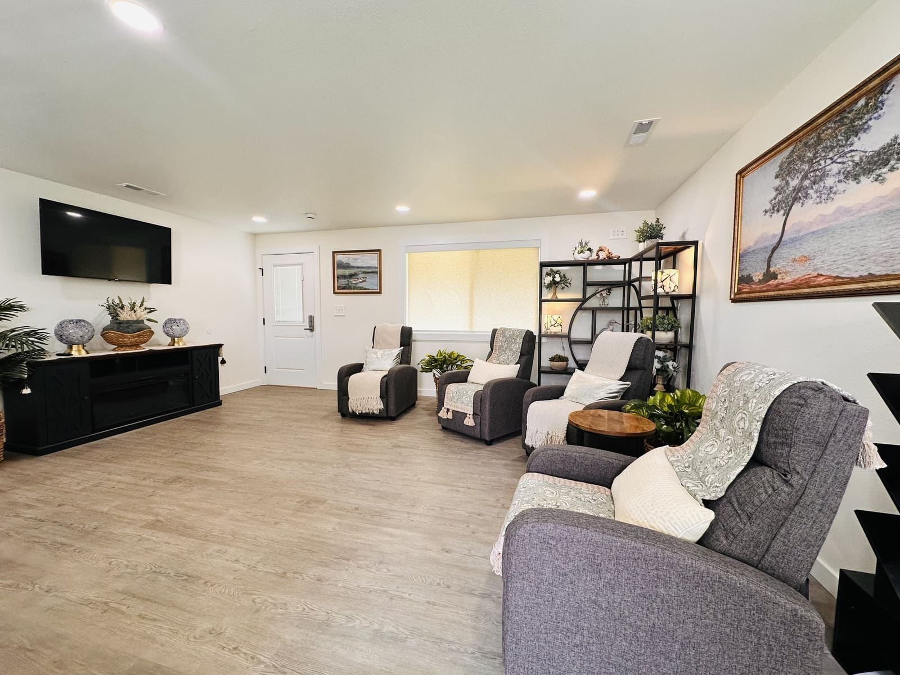
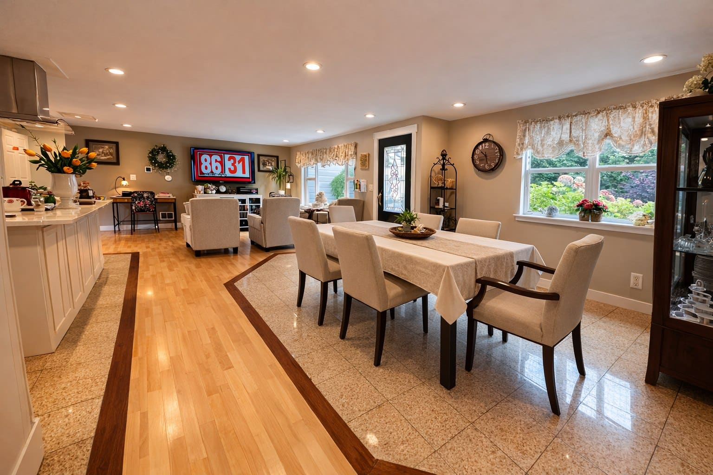
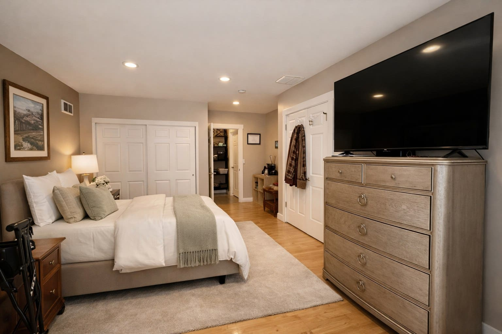
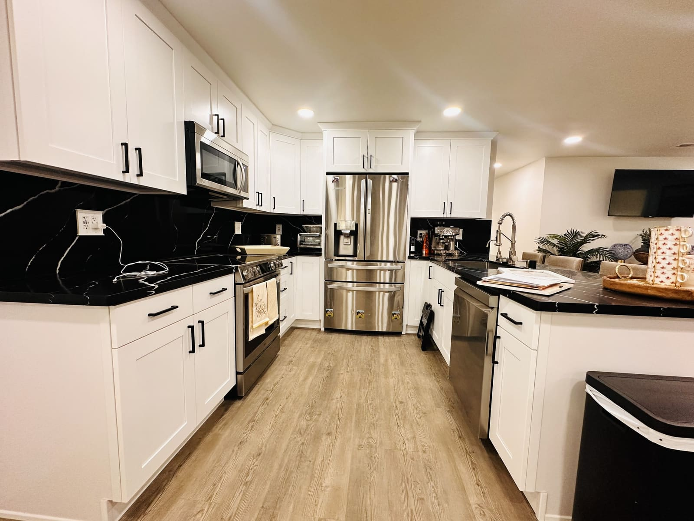
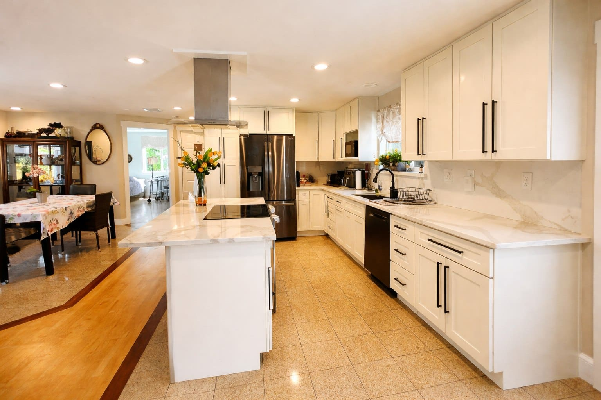

RN-Led Clinical Excellence + Family-Centered Care
RN-led care in a real home, close to your family.
Two Adult Family Homes in Burien and Des Moines, WA, each with up to six residents and 24/7 caregiver support.
Up to 6 residentsin each home
24/7 caregiverswith RN leadership
LicensedWashington Adult Family Homes
5.0 on Google4 reviews, Burien home
Who leads care at Magnolia
Sosena Mekuria, RN
Registered Nurse | RN Owner & Operator — Burien | RN Manager — Des Moines
- Registered Nurse visits are scheduled according to resident needs and each home's care arrangements.
- Sosena guides care planning, medication safety, fall-risk reduction, and dementia-informed support.
- Families get direct communication and clear next steps.
Inside the homes
Real rooms from Burien and Des Moines. Tours show the rest.





Care that fits daily life
Not sure what your loved one needs yet? A consultation can help sort that out.
All care and services- Memory & dementia supportCalm routines, gentle cueing, and familiar rhythms.
- Personal care assistanceBathing, dressing, grooming, mobility, and transfers.
- Medication support & RN delegationHow medication support works under Washington State rules.
- Fall-risk reduction & safetyMobility help, care planning, and communication.
Start with a conversation.
- Tell us what is happeningShare what feels hardest right now.
- Talk with MagnoliaGet plain answers on fit, timing, and availability.
- Tour the right homeVisit in person when you are ready.